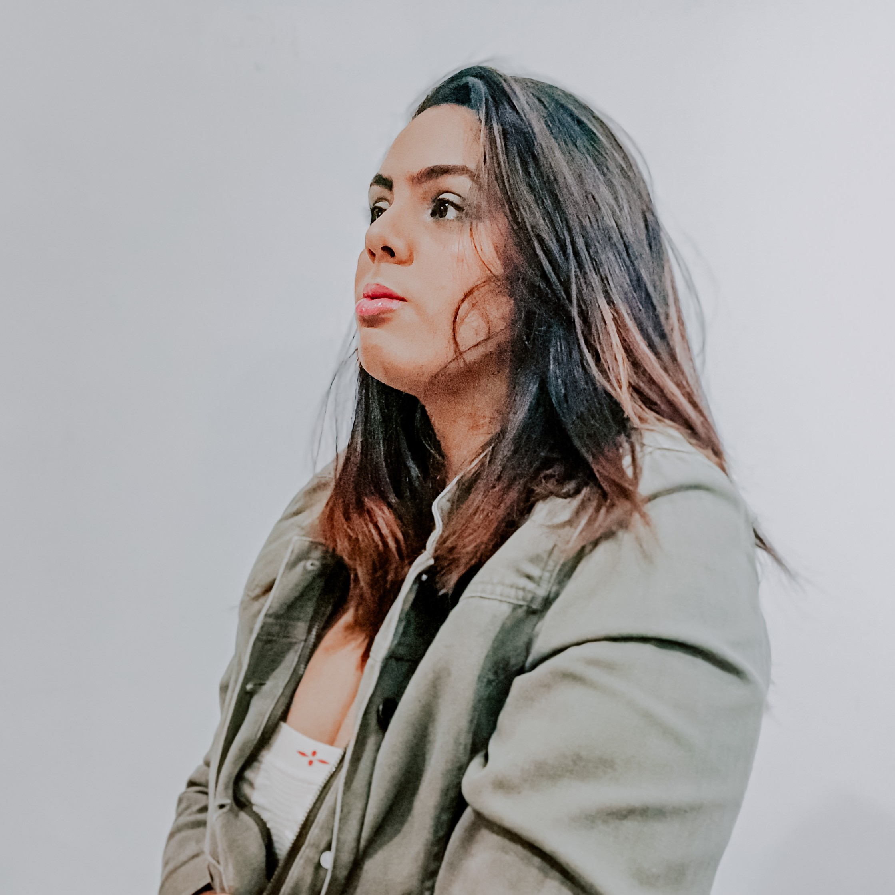
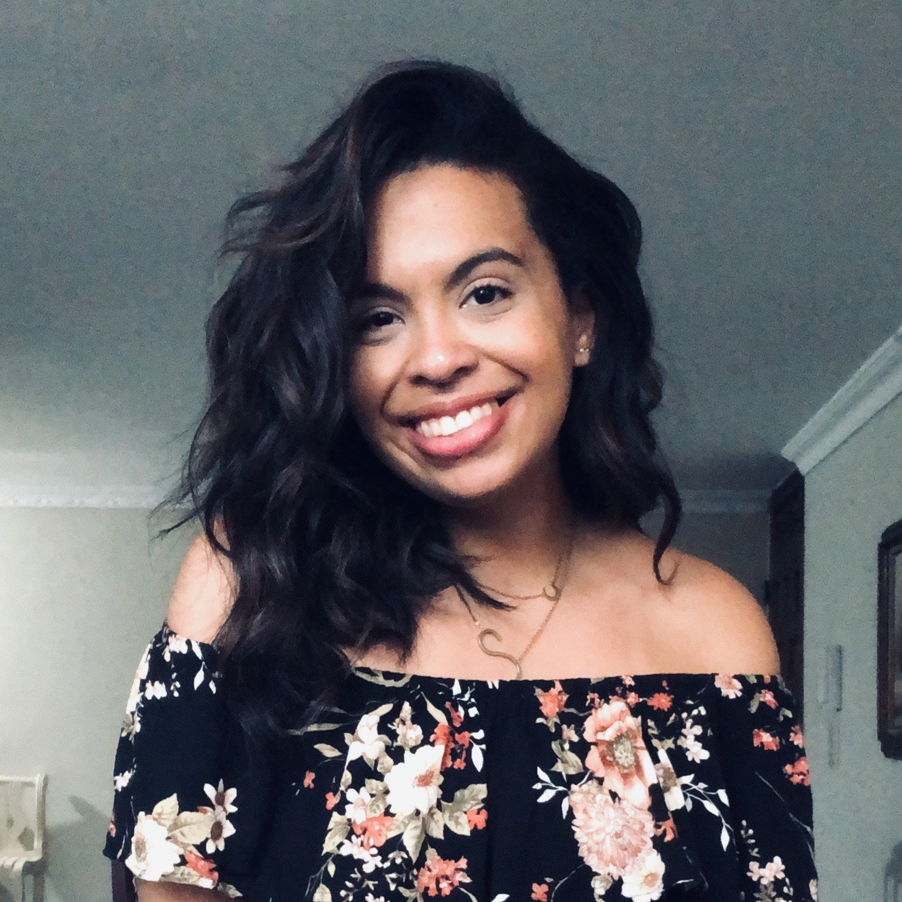
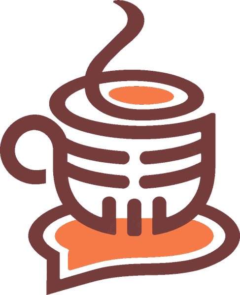

Nosotros
Todo empieza con una conversación
Café Con Dos es una plataforma independiente que explora la cultura, la creatividad, las personas y las ideas a través de conversaciones y pensamientos compartidos.
Desde creadores emergentes y descubrimientos culturales hasta opiniones y curiosidades cotidianas, abrimos espacio para voces que merecen ser escuchadas e historias que valen la pena compartir.
Nuestra historia
Café Con Dos nació en enero de 2025 como un podcast donde las ideas, las preguntas y los temas que invitaban a reflexionar encontraban su lugar en la conversación. A través de distintos episodios, el proyecto fue tomando forma, compartiendo opiniones, explorando nuevas perspectivas y, de vez en cuando, sentándose a conversar con artistas y creadores sobre su trabajo, sus procesos y aquello que los inspira.
Con el tiempo, esa curiosidad abrió la puerta a nuevas maneras de profundizar en temas que van más allá de lo evidente. Así nació Entre Elementos, una serie dentro del podcast, dedicada a analizar Avatar: La Leyenda de Aang desde una mirada más profunda, conectando sus personajes y acontecimientos con ideas que siguen dando de qué hablar.
Hoy, Café Con Dos comienza una nueva etapa como plataforma editorial independiente, ampliando sus posibilidades de explorar la cultura, descubrir proyectos y dar espacio a distintas voces. El podcast queda en pausa por ahora, pero continúa siendo una parte fundamental de lo que somos. Más adelante, esperamos volver al micrófono para retomar esas conversaciones que dieron origen a todo.
Por ahora, el café sigue servido. Y todavía hay mucho por compartir.
Nuestro propósito
Conectar personas, ideas y cultura a través de historias y conversaciones que despierten la curiosidad.
Nuestra promesa
Cada visita debería dejarte algo para descubrir, pensar o compartir.
Lo que queremos que te lleves
Descubrimiento
“Encontré algo —o a alguien— que no conocía.”
Conversación
“Esto me dio algo interesante para pensar o conversar.”
Comunidad
“Aquí hay personas y opiniones con las que conecto.”
Cultura
“Esto me ayuda a explorar lo que me importa desde otro ángulo.”
¿Quiénes somos?

Allie Tolentino
Editorial Director
Fundadora y directora editorial de Café con Dos. Digital marketer, músico y lectora apasionada que encuentra en las historias, la cultura y el entretenimiento una fuente constante de curiosidad e inspiración para conversar con un buen café.

Sarah Espaillat
Columnist
Observadora por naturaleza y curiosa por convicción, encuentra en las experiencias cotidianas una fuente constante de ideas. Le interesan las conexiones humanas, los puntos de vista que desafían lo establecido y las ideas que invitan a ver las cosas desde otra perspectiva. Parte de Café Con Dos desde su primera etapa en el podcast.
¿Tienes una historia que compartir?
Creadores, propuestas editoriales y marcas: nos encanta conocer a quienes están haciendo cosas que vale la pena contar.
Escríbenos
Café para llevar
Te llega un email cuando publicamos algo nuevo: historias, opiniones, Sobremesa o un episodio. Cero spam.